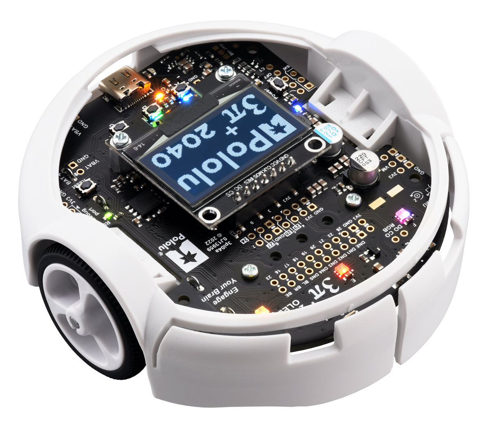
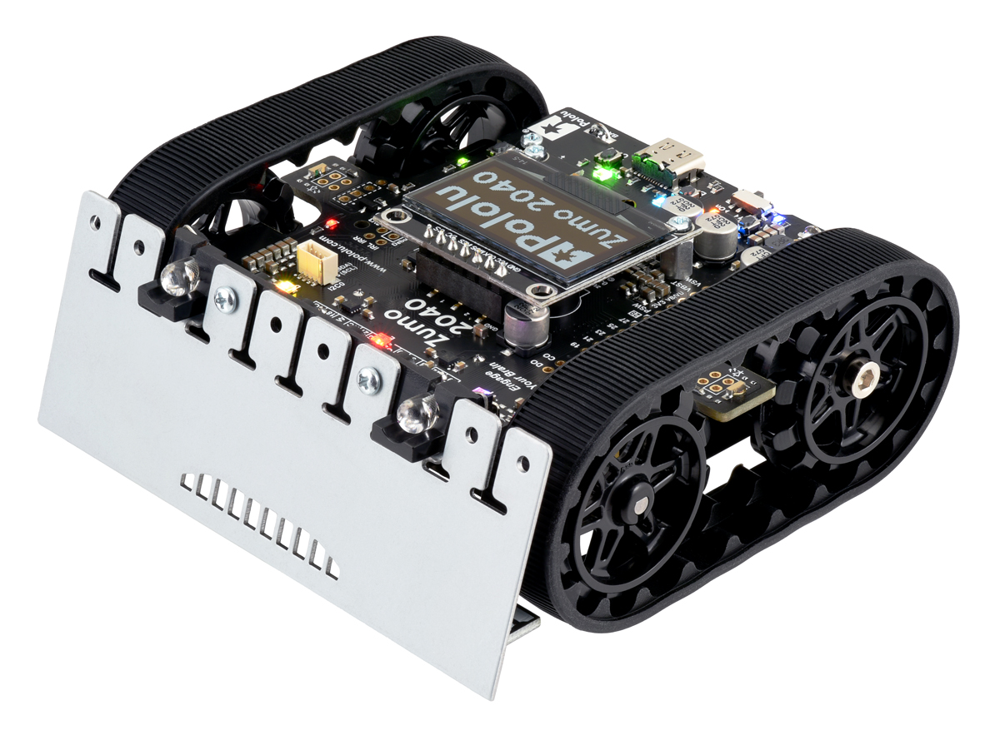

Pololu 3pi+ 2040 / Zumo 2040 — Rust Firmware
This library provides a high-performance async Rust firmware for Pololu 3pi+ 2040 robot and Pololu Zumo 2040 robot,
featuring differential-drive control, tele-operation via joysticks, trajectory following, IMU fusion, SD logging, and ROS 2 support. Pololu 3pi+ is a differential-drive robot that can move with up to 4m/s. Pololu Zumo is a tracked robot that can move on different terrains. These robots are suitable for developing motion planning algorithms and multi-agent algorithms.
Robot Platforms


Features
- Rust + Embassy async firmware
- Motor + Encoder closed-loop control
- LSM6DSO + LIS3MDL IMU support
- Madgwick / Complementary filter
- SD card logging
- UART packet decoding
- ROS 2 interface (multi-robot support)
- Tele-Operation via joystick
- Trajectory following (direct or MoCap-based)
Documentation
Quick Start
Hardware
Software
Build & Flashing
Debugging
ROS 2 Interface
Usage
→ Teleop / Trajectory Following
Troubleshooting
Repository
GitHub: pololu
Disclaimer
This documentation is based on the firmware at 08.12.2025. It does not claim completeness in any way or form. If you'd like to, you're welcome to provide feedback and suggestions via GitHub.